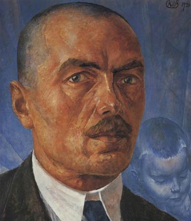

Кетров-Водкин Кузьма
Богатое наследие в мировой живописи сумел оставить после себя известный российский художник Петров-Водкин. Он родился в 1878 году в Хвалынске, а в свои юные годы собирался стать железнодорожником. Однако судьба сделала из него живописца с мировым именем.
Многим этот автор известен по картине «Купание красного коня», ставшей символом революции.
Также к его наиболее известным работам относятся картины «Весна», «Утренний натюрморт» и «Смерть комиссара».